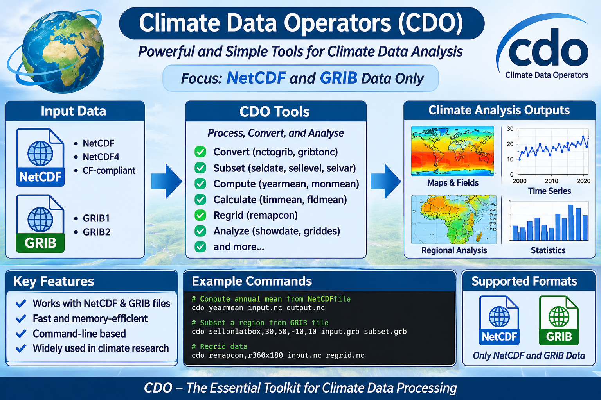
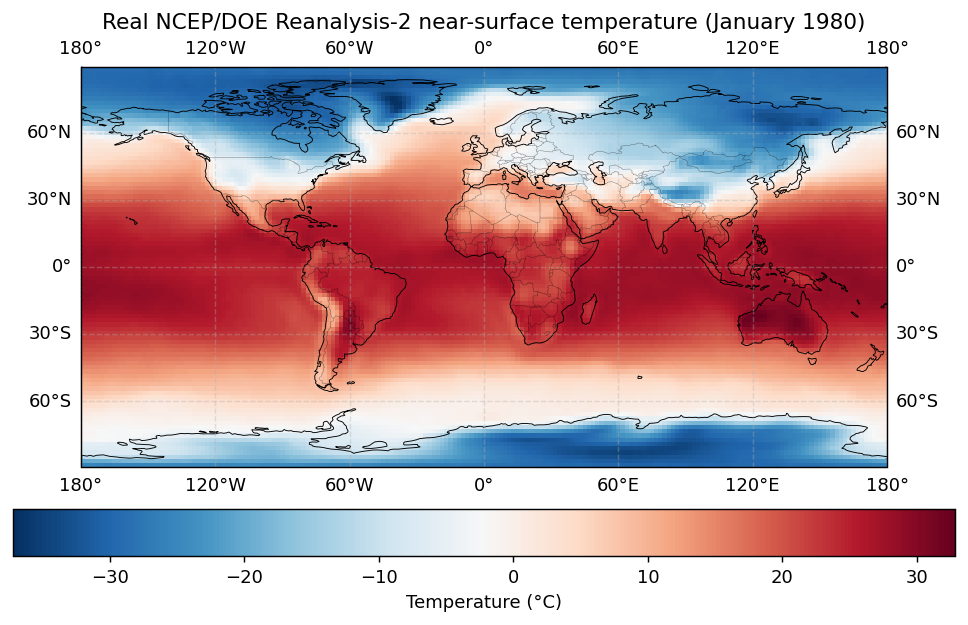

Module 1: Introduction to Climate Data Operators#

Learning Objectives#
By the end of this module, you will be able to:
Explain what CDO is and why it is essential for climate data processing
Describe CDO’s architecture and the operator concept
Identify common climate data formats (NetCDF, GRIB, HDF5, GeoTIFF)
Distinguish between different climate data sources (CMIP, reanalysis, weather, satellite)
Navigate the course structure and understand what each module covers
Install CDO and explore available operators
What is CDO?#
Climate Data Operators (CDO) is a powerful command-line tool designed specifically for processing and analyzing climate and weather data. Developed and maintained by the Max Planck Institute for Meteorology, CDO provides a comprehensive collection of operators that work with climate data files in various formats.

Fig. 1 Real near-surface air temperature from the NCEP/DOE Reanalysis-2 sample distributed with this course. Every chapter and notebook uses this and other real observational and reanalysis datasets.#
Note
CDO is free and open-source software. It handles the complexities of climate data formats so that researchers can focus on science rather than data wrangling.
CDO operates on the principle of operators - individual commands that perform specific operations on climate data. These operators can be chained together to create complex processing pipelines.
Why CDO is Important#
Climate data processing presents several unique challenges that CDO addresses:
Important
Efficiency: CDO is optimized for large-scale climate datasets, often processing terabytes of data efficiently without requiring a high-memory environment.
Benefit |
Description |
|---|---|
Efficiency |
Written in C, CDO processes data much faster than equivalent Python or R scripts |
Standardized Operations |
Hundreds of predefined operators for common climate data tasks |
Large Dataset Handling |
Memory-efficient processing that can handle files much larger than available RAM |
Format Agnostic |
Works seamlessly across NetCDF, GRIB, HDF5, and other formats |
Reproducibility |
Command-line operations are inherently reproducible and scriptable |
Parallel Processing |
Support for multi-threaded and distributed computing |
CDO Architecture#
CDO’s architecture is based on a stream-oriented data flow model:
Input File(s) → [CDO Operator(s)] → Output File
The Operator Concept#
Each CDO command follows this syntax:
cdo [global_options] operator [operator_options] input_file output_file
Operators are organized into categories:
File operations: copy, merge, split, select
Statistical operators: mean, sum, max, min, std
Temporal operators: timmean, timsum, timmax
Spatial operators: fldmean, fldsum, fldmax
Arithmetic operators: add, sub, mul, div
Grid operators: remap, grid interpolation
Conditional operators: select, ifthen, mask
Tip
Think of CDO operators as a toolbox. Each operator does one thing well, and you can combine them like building blocks.
Data Flow#
CDO processes data as a stream:
Read input file(s) in chunks
Apply the operator to each chunk
Write the processed result to output
This streaming architecture means CDO never needs to load an entire dataset into memory at once.
Climate Data Formats Overview#
Climate data comes in several formats, each with its own strengths:
NetCDF (Network Common Data Form)#
NetCDF (.nc) is the most widely used format in climate research.
Note
NetCDF is self-describing - the file contains metadata about its contents, including variable names, units, dimensions, and coordinate information.
Key characteristics:
Self-describing with embedded metadata
Follows CF (Climate and Forecast) conventions
Supports compression and chunking
Ideal for multidimensional array data
GRIB (GRIdded Binary)#
GRIB (usually .grib or .grb) is the standard format from the World Meteorological Organization (WMO).
Feature |
GRIB1 |
GRIB2 |
|---|---|---|
Introduced |
1985 |
2003 |
Template-based |
Limited |
Extensive |
Compression |
Simple packing |
Complex packing, JPEG, PNG |
Support |
Legacy |
Modern |
Sections |
3 |
7 |
HDF5 (Hierarchical Data Format)#
HDF5 is a versatile format used in many scientific domains:
Supports large, complex data
Excellent compression capabilities
Used by NASA for Earth observation data
Can store multiple datasets in one file
GeoTIFF#
GeoTIFF embeds georeferencing information into standard TIFF images:
Common for remote sensing and satellite data
Supports multiple bands
Widely supported in GIS software
Climate Models#
Climate models simulate the Earth’s climate system and produce vast amounts of data.
CMIP5 and CMIP6#
The Coupled Model Intercomparison Project (CMIP) coordinates climate model experiments worldwide.
Important
CMIP data is foundational for IPCC assessment reports.
CMIP5 (2013):
50+ modeling groups
~60 models
RCP (Representative Concentration Pathway) scenarios
Used in IPCC AR5
CMIP6 (2019+):
100+ modeling groups
~100 models
SSP (Shared Socioeconomic Pathway) scenarios
Used in IPCC AR6
Higher resolution than CMIP5
Regional Climate Models (RCMs)#
Regional models provide higher resolution over specific areas:
CORDEX - Coordinated Regional Climate Downscaling Experiment
RegCM - Regional Climate Model
WRF - Weather Research and Forecasting model
RACMO - Regional Atmospheric Climate Model
Tip
RCMs typically run at 12-50 km resolution, compared to 100-300 km for global models.
Reanalysis Data#
Reanalysis combines observations with model data to create consistent, long-term climate records.
ERA5#
The European Centre for Medium-Range Weather Forecasts (ECMWF) latest reanalysis:
Attribute |
Value |
|---|---|
Coverage |
1940-present |
Resolution |
0.25° (~31 km) |
Hourly |
Yes |
Levels |
137 hybrid sigma-pressure |
Variables |
240+ |
Size |
~2 PB total |
ERA-Interim#
ERA-Interim is ECMWF’s earlier reanalysis (1979-2019):
0.75° resolution (~79 km)
6-hourly output
60 vertical levels
Being superseded by ERA5
MERRA-2#
NASA’s Modern-Era Retrospective analysis for Research and Applications, Version 2:
Attribute |
Value |
|---|---|
Coverage |
1980-present |
Resolution |
0.5° x 0.625° |
Hourly |
Yes |
Focus |
Atmospheric, hydrologic cycle |
JRA-55#
Japanese 55-year Reanalysis by JMA:
1958-present
0.5625° resolution
3-hourly output
60 levels
Weather Datasets#
GFS (Global Forecast System)#
The US National Weather Service’s global model:
0.25° resolution
16-day forecast
4 runs per day (00, 06, 12, 18 UTC)
Free and open access
ICON#
The ICOsahedral Non-hydrostatic model from DWD (Germany):
Uses an icosahedral grid (no poles)
Global and regional versions
13 km global resolution
7-day forecasts
HRRR (High-Resolution Rapid Refresh)#
NOAA’s convection-allowing model:
3 km resolution
Hourly updates
18-hour forecast
US domain only
Earth Observation Datasets#
Satellite data provides crucial observations of the Earth system:
Note
CDO can process satellite-derived datasets that follow CF conventions, particularly in NetCDF format.
Dataset |
Source |
Key Variables |
|---|---|---|
MODIS |
NASA Terra/Aqua |
Land surface, SST, aerosols |
VIIRS |
NOAA Suomi-NPP |
Vegetation, fires, SST |
Sentinel |
ESA Copernicus |
SAR, optical imagery |
Landsat |
NASA/USGS |
Land surface, vegetation |
TRMM/GPM |
NASA/JAXA |
Precipitation |
SMAP |
NASA |
Soil moisture |
Course Structure Overview#
This course is organized into six modules:
Module |
Title |
Focus |
|---|---|---|
1 |
Introduction |
CDO concepts, data formats, climate data sources |
2 |
Installation and Setup |
Installing CDO on various platforms |
3 |
Linux Basics |
Command-line skills for climate data processing |
4 |
CDO Operators |
File operations and dataset exploration |
5 |
Working with NetCDF |
NetCDF format, metadata, compression |
6 |
Working with GRIB |
GRIB format, conversion, manipulation |
Hands-On Exercises#
Exercise 1: Install CDO#
Exercise 1
Install CDO on your system using one of the following methods:
Linux (Ubuntu/Debian):
sudo apt-get update sudo apt-get install cdo
macOS:
brew install cdo
Windows (WSL):
# Install WSL first, then use Ubuntu commands sudo apt-get update sudo apt-get install cdo
Conda (any platform):
conda install -c conda-forge cdo
Exercise 2: Verify Installation and Explore Help#
Exercise 2
Once CDO is installed, run the following commands and note the output:
cdo --version
cdo --help | head -50
Answer these questions:
What version of CDO is installed?
How many operators are listed in the help output?
What is the generic CDO command syntax shown in the help?
Exercise 3: Explore Available Operators#
Exercise 3
Explore CDO’s operator categories:
# Count total operators
cdo --help | grep -c "^ "
# List file operation operators
cdo --help | grep -i "file"
# Look for temporal operators
cdo --help | grep -i "tim"
# Find statistical operators
cdo --help | grep -E "mean|std|min|max" | head -20
Create a list of 10 operators that seem useful for your research.
Exercise 4: Check Format Support#
Exercise 4
Check which file formats your CDO installation supports:
cdo --help | grep -i "format"
cdo --help | grep -i "netcdf\|grib\|hdf\|tiff"
What formats are available? Which format is recommended for general use?
Quiz#
Quiz
Test your understanding of Module 1 concepts.
Exercise 5 (Question 1: What does CDO stand for?)
A. Climate Data Operators
B. Climate Database Organizer
C. Comprehensive Data Output
D. Coordinated Data Operations
Solution to Exercise 5 (Question 1: What does CDO stand for?)
A. Climate Data Operators
Exercise 6 (Question 2: Which climate data format is self-describing and most widely used in climate research?)
A. GRIB2
B. HDF5
C. NetCDF
D. GeoTIFF
C. NetCDF
Exercise 7 (Question 3: Which ECMWF reanalysis product has the highest spatial resolution?)
A. ERA-Interim
B. ERA5
C. ERA-20C
D. ERA-40
Solution to Exercise 7 (Question 3: Which ECMWF reanalysis product has the highest spatial resolution?)
B. ERA5 (0.25° resolution)
Exercise 8 (Question 4: CDO processes data using which architecture model?)
A. Batch processing
B. Stream-oriented data flow
C. Database query
D. Client-server
Solution to Exercise 8 (Question 4: CDO processes data using which architecture model?)
B. Stream-oriented data flow
Exercise 9 (Question 5: Which CMIP iteration is used for the latest IPCC assessment report (AR6)?)
A. CMIP3
B. CMIP5
C. CMIP6
D. CMIP2
Summary#
In this module, we covered:
CDO is a command-line tool for efficient climate data processing using operators
Operator architecture:
cdo operator input outputwith streaming data flowFour main formats: NetCDF (self-describing, CF-compliant), GRIB (WMO standard), HDF5 (versatile), GeoTIFF (remote sensing)
Climate models: CMIP5/CMIP6 global models and regional models (CORDEX, WRF)
Reanalysis data: ERA5 (0.25°), ERA-Interim, MERRA-2, JRA-55
Weather datasets: GFS (NWS), ICON (DWD), HRRR (NOAA)
Earth observation: MODIS, VIIRS, Sentinel, Landsat
Key Points
CDO is the industry standard for command-line climate data processing
Understanding data formats helps you choose the right tools for your data
CDO’s streaming architecture handles large datasets efficiently
The operator concept makes complex pipelines easy to build and reproduce
References#
CDO Homepage: https://code.mpimet.mpg.de/projects/cdo
NetCDF Documentation: https://docs.unidata.ucar.edu/nug/current/
GRIB Format: https://www.wmo.int/pages/prog/www/WMOCodes/ManualonGRIB2.pdf
ERA5: https://www.ecmwf.int/en/forecasts/datasets/reanalysis-datasets/era5